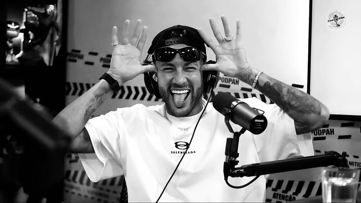

Neymar Jr. acumulou mais de 30 títulos oficiais ao longo de sua vitoriosa trajetória por clubes e pela Seleção Brasileira.🇧🇷 Santos.Foi o clube onde Neymar surgiu e recolocou o time no topo da América após a "Era Pelé",Copa Libertadores da América (2011)Copa do Brasil (2010)Recopa Sul-Americana (2012)Campeonato Paulista,3 vezes: 2010, 2011 e 2012.Barcelona Parte do trio "MSN", conquistou os principais títulos europeus e espanhóis:UEFA Champions League (2014/15) e Mundial de Clubes (2015)La Liga (2 vezes) e Copa do Rei (3 vezes).Paris Saint-Germain (PSG).Dominou o cenário nacional francês:Ligue 1 (5 vezes) e Copa da França (3 vezes)Copa da Liga (2 vezes) e Supercopa da França (2 vezes).🇸🇦 Al-Hilal.Integrou o elenco vencedor de títulos nacionais em 2023/24.🇧🇷Seleção Brasileira,Destaque com títulos importantes, tornando-se o maior artilheiro da equipe:Medalha de Ouro Olímpica (2016) e Copa das Confederações (2013)Sul-Americano Sub-20 (2011).
eu amo o neymar jr.🤍
visitar o googleNeymar,tem atualmente 4 filhos.
